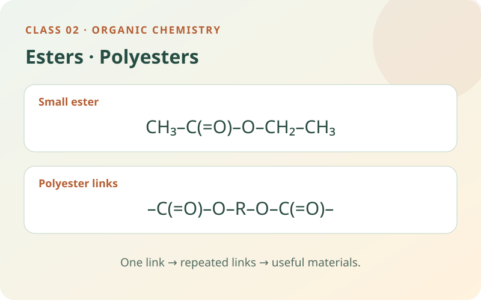

Build an ester from an alcohol and an acid, then discover how two reactive ends turn small molecules into a polyester chain.
Read → model → explain6 self-study checksUse the apparatus directly

By the end of this class, you should be able to…
Identify an ester link and name a simple ester from its two starting compounds.
Explain reversible esterification and the role of a catalyst.
Build a polyester model and count links and water molecules in a finite chain.
01
A short recap: the two groups that will react
An alcohol contains an –OH group, and a carboxylic acid contains –C(=O)–OH, shortened to –COOH. A functional group is an atom arrangement responsible for characteristic reactions. C=O is called a carbonyl: the carbon and oxygen share two electron pairs.
In the general formulas R–OH and R–COOH, R stands for a carbon-containing group. R is a placeholder, not the symbol for a chemical element. A second label, R′, means another group that can be different; the prime mark is a label, not a power. Read the entire functional group before predicting a reaction.
Remember and explain whyR means “the rest of the group”; read the functional-group connections explicitly.
02
Esterification: make a new –COO– connection
Esterification can join a carboxylic acid and an alcohol to form an ester and water. A simple ester contains R–C(=O)–O–R′. The ester link, –COO–, includes a carbonyl next to an oxygen joined to another carbon group. It is not the same as an alcohol –OH or an acid –COOH.
For ethanoic acid and ethanol: CH₃COOH + CH₃CH₂OH ⇌ CH₃COOCH₂CH₃ + H₂O. The ester is ethyl ethanoate. In the school group model, an OH from the acid and an H from the alcohol are shown leaving as water. This tracks the net group change rather than every intermediate in the acid-catalysed mechanism.
Remember and explain whyEster: carbonyl + oxygen bridge, –C(=O)–O–. The bridge connects to another carbon group.
03
Name it, then interpret the reversible arrow
For the simple esters here, name the alcohol-derived alkyl group first, followed by the acid-derived carboxylate name. Ethanol supplies ethyl; ethanoic acid supplies ethanoate. Methanol and propanoic acid would produce methyl propanoate.
The symbol ⇌ means the reaction can proceed forwards and backwards. At equilibrium, the two reaction rates are equal and composition stays constant; the amounts of reactants and products do not have to be equal. An acid catalyst speeds the approach to equilibrium in both directions. A catalyst alone does not change the equilibrium mixture at a fixed temperature.
Remember and explain whyAlcohol first, acid second: ethyl + ethanoate. ⇌ means both directions, not equal amounts.
04
From a small ester to a long polyester
A monomer is a small molecule that can join to others. A polymer is a large molecule containing many linked units. A diol has two alcohol groups, one at each end; a dicarboxylic acid has two carboxyl groups. “Di-” means two. These complementary ends let a chain keep growing.
For example, HO–CH₂–CH₂–OH is a diol. Each –OH can form an ester link with an acid group. A dicarboxylic acid such as HOOC–CH₂–CH₂–COOH can link at both its ends too. The resulting chain has repeated –COO– ester links and is a polyester. Ordinary ethanol and ethanoic acid each have only one suitable reactive group, so their esterification does not produce a long chain.
Remember and explain whyTwo ends let the chain extend. A polyester is recognised by repeated ester links.
05
Count water correctly in a finite chain
Condensation polymerisation joins suitable monomers while releasing a small molecule. For the diol + dicarboxylic acid route shown here, each new ester link releases one water molecule. Other condensation routes can release different small molecules; always check the actual reactants.
A single, unbranched, open chain made from N starting monomer molecules has N − 1 links. N is the number of molecules joined, not their number of atoms. With n diols and n diacids, N = 2n, so the finite chain has 2n − 1 links and releases 2n − 1 waters. This model excludes rings and branches and leaves two end groups. In a textbook repeat unit, the subscript n usually counts repeats; read what n means in each equation.
Remember and explain whyOne open chain: links = starting molecules − 1. One water per ester link in this chosen route.
06
Polyesters in everyday materials and recycling
Many small esters have characteristic odours and are used in formulated fragrances or flavourings. An odour is not a reliable identification test, and being an ester does not make a chemical safe to taste or smell. Fats and oils also contain ester connections.
PET, poly(ethylene terephthalate), is a polyester used in bottles and fibres. Its repeated ester connections can be broken by hydrolysis, a reaction with water, under suitable chemical conditions. Hydrolysis is not simply melting: it breaks chemical bonds. Not every polyester biodegrades quickly, and an ester link is not a guarantee that a plastic can be composted in ordinary conditions. Use the bench to compare one small ester with a finite polyester chain.
Remember and explain whyPolyester says which links repeat; it does not promise instant biodegradation.
This is a structural group model. The source groups and H + OH packet can be dragged directly on the bench; you can also select the object and then its destination, or use the keyboard. Help with this step demonstrates one action.
07
Choose an investigation
Make a prediction, choose the conditions and use the apparatus on the bench. Drag equipment into place, turn switches and watch the reaction. Need a hand? Use Help with this step. Record your evidence before answering the explanation question.
Switch investigations here. Your progress and notebook stay available while this page is open.
Preparing your experiment…
VIRTUAL LAB
YOUR BENCH
Choose conditions Sample, quantities and equipment
Use the equipment directly on the bench. Drag, click or tap the highlighted apparatus.
YOUR EVIDENCE
Record and compare your observations.
Observations from the current experiment
Your notebook stays while you explore this page. Reloading clears it. Practical notes and lesson checks are not sent to the teacher.
08
Use the evidence
09 · CHECK THE IDEAS YOU JUST LEARNED
Practise this class.
Every question uses an idea explained above. Try it, read the feedback and return to a worked example if needed. These short practice checks and the practical notebook stay on this page; they are separate from recorded Test yourself sessions.
Use the six practice questions above for this class. Once you have studied the Organic Chemistry unit, use its full revision simulator. Its 80 questions also cover hydrocarbons, combustion, cracking and addition polymers. Read the unit preparation and worked examples before attempting unfamiliar areas. Test yourself uses the existing teacher recording connection.